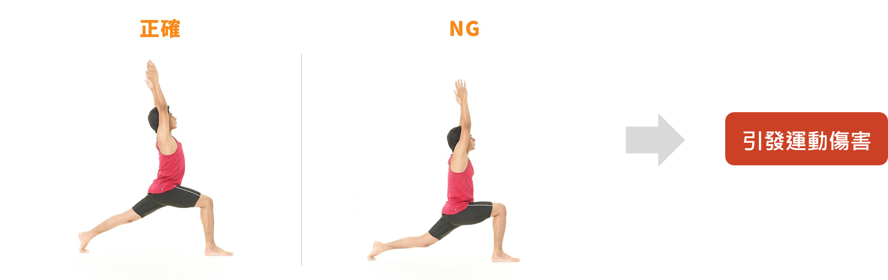
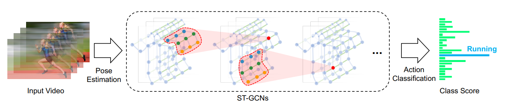
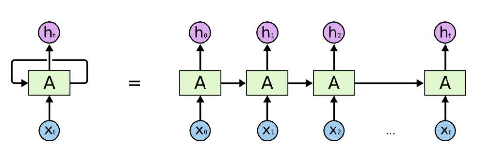

導覽目錄
1. 摘要
人體動作辨識已經是一個廣泛應用的研究領域，本論文設計出一套運用視覺化分析來偵測瑜珈運動姿勢的系統，透過時空圖卷積網絡模型(Spatial Temporal Graph Convolutional Networks, ST-GCN)結構建立骨架圖，並採用圖卷積網絡(Graph Convolutional Networks, GCN)以及長短期記憶模型(Long Short Term Memory Networks, LSTM)的機器學習方式來對骨架圖進行分類、辨識，此技術會建立出具時序性的資料，能夠與資料庫中的動作比對正確度，若使用者的姿勢正確度較低，則使用者就能得知自己的動作不正確，透過辨識多次練習過程，能夠達到修正動作的效果。實驗結果顯示，本論文所提方法可以獲得良好的成效。
2. 動機
由於網路影視平台的趨勢及方便性，人們會在網路上搜尋運動、有氧舞蹈、瑜珈等等相關的示範影片或圖片，並跟著影片中的示範者練習動作，但沒有專業人員在旁協助指導的情況下，在螢幕前的人們不一定能做出和影片中示範者相同標準的動作，錯誤的姿勢可能會導致運動傷害，像是關節、骨骼肌肉受損等等，也無法發揮運動真正的效果，若是為此發展出一套系統來辨識使用者在運動期間的肢體動作標準程度，並為使用者分級規劃動作難度，不僅可以達到此動作應有的運動效果，還可以避免肢體動作有誤而造成運動損傷。
以瑜珈為例，當使用者看著影片中的人示範時，會依照示範者的四肢進行模仿，但事實做出來的動作可能無法達到原本應有的運動效果，原因是某些部位的位置不是正確的，例如圖一的左圖，若手向後伸長，則不會對身體造成壓迫，圖一的右圖則是手向上方伸長、甚至稍微向前傾斜，此動作可能對前膝蓋或其他部會造成傷害，所以沒有專業人士在旁監看使用者的姿態，使用者也難以自我調整改善。
圖一
3. 系統架構
以下四點為主要步驟，系統架構之完整步驟如右方圖二所示:
1.透過影像處理程式做演算來擷取各姿勢影像
2.使用ST-GCN模型建構使用者的姿勢模型
3.利用圖卷積網絡(GCN)對模型進行分類
4.將圖卷積網絡分析出的時空圖模型送入資料庫中比對姿勢
圖三 : 系統示意圖
圖二 : 系統架構圖
4. 影像辨識
首先利用OpenPose來提取人體骨架關鍵點(Keypoint)，其中生成的各點Keypoint數據內容為x,
y, c，x及 y指各個點在畫面上的座標，c指的是confidence
score，其數值c介於0到1之間，OpenPose可使用三種資料集來生成骨架數據，分別為：
圖四 : Openpose
再來會將Openpose生成之骨架圖送進ST-GCN作為骨架模型，該模型會自動從數據中學習空間和時間模式。它可以避免在將3D訊息轉換為2D訊息期間丟失時間和空間訊息，將輸入的關鍵點序列中建立一個時空圖（Spatial-Temporal Graph）。
圖五 : ST-GCN
5. 深度學習
LSTM的概念為將遞迴神經網路想像成相似的單元，不斷地將過往資訊往下傳遞，也就是說過去的預測的Output會成為將來較近單元的Input，並以此類推，如圖七，LSTM目的是設計用來改善 RNN 在長期記憶的不足。
圖六 : LSTM概念圖
影像辨識皆完成之後，我們將圖卷積網絡分析出的時空圖模型送入LSTM深度學習模型中比對姿勢。目前能夠做到將各影片分類，並且比較該影片與類別的相似度。
6. 實驗結果
將所收集的動作資料，在資料庫中分類成五類動作類型，前四類分別為「三角式Triangle Pose」、「樹式Tree Pose」、「騎士二式Virabhadrasana Ⅱ Pose」、「下犬式Downward Dog Pose」，最後一類為異於前四類的多筆相異動作資料，集合成「其他動作Other Pose」類型，圖八為各個動作所收集到的標準動作影片數量。
圖七 : 建置環境之套件及系統環境版本詳細資訊
圖八 : 資料集
單一動作訓練
將騎士二式(Virabhadrasana Ⅱ
Pose)作為此次訓練之標準動作，將騎士二式的資料標記為
0.85，將其他動作的資料標記為 0.15，設定 epoch = 500，利用 LSTM
及留一交叉驗證法(Leave-One-Out
cross-Validation)來訓練及測試模型。
模型共有18筆測試資料，預測正確的筆數共有17筆，單一動作模型的準確度為94.44%。
多種動作的訓練
將五種不同動作的資料，依照各類資料筆數來區分成五個分數：
(a) 三角式(Triangle Pose)標記為0.08
(b) 樹式(Tree Pose)標記為0.2
(c) 騎士二式(Virabhadrasana Ⅱ Pose)標記為0.41
(d) 下犬式(Downward Dog Pose)標記為0.68
(e) 其他動作(Other Pose)標記為0.89
設定epoch=1000，利用LSTM及留一交叉驗證法(Leave-One-Out
cross-Validation)來訓練此Model，最後將所有影片透過訓練好的Model來進行預測，並輸出各筆資料之預測值，依照每種動作所標記的分數劃分成5個Range：
(a) 三角式(Triangle Pose) Range： R
<= 0.15
(b) 樹式(Tree Pose) Range： 0.15
< R <=0.24
(c) 騎士二式(Virabhadrasana Ⅱ Pose) Range： 0.24
< R <=0.58
(d) 下犬式(Downward Dog Pose) Range： 0.58
< R <=0.79
(e) 其他動作(Other Pose) Range： 0.79
< R
測試結果如圖九所示。
此模型共有33筆測試資料，預測正確的筆數共有27筆， 多種動作模型辨識的準確度為81.82%